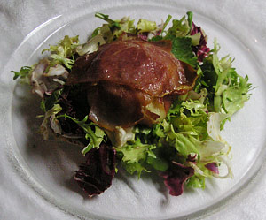

Rohschinken-Geisenkäsepäckli auf Salatbouquet
4 von 6Geisenkäse mit in Olivenöl getauchte Rohschinkenstreifen umwickeln. Bei ca. 200 Grad 10 Minuten backen. Auf einem Salat servieren.

Geisenkäse mit in Olivenöl getauchte Rohschinkenstreifen umwickeln. Bei ca. 200 Grad 10 Minuten backen. Auf einem Salat servieren.

Montagsplausch Nr. 137. Der Abend hiess «Gäbis erster Arbeitstag!».